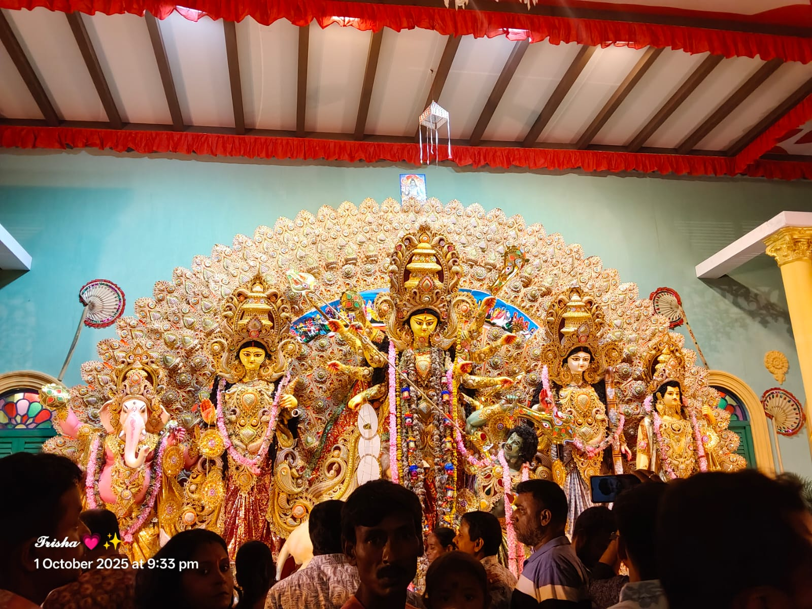
Hazramore Maitribhumi
২০ তম বর্ষ
শারদীয়ার কয়েকদিন এখানে মানুষের মধ্যে উৎসবের আমেজ থাকে।

Contai YouthGuild Club
৩৭তম বর্ষ
ঐতিহ্য ও আনন্দের সঙ্গে এখানে দুর্গাপূজা উদযাপন করা হয়।
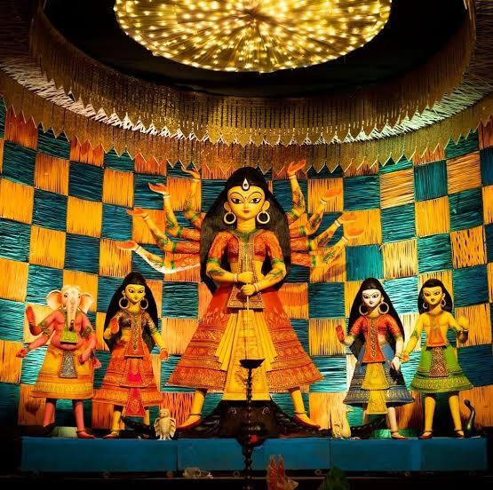
Contai Nandanik
২২তম বর্ষ
ঐতিহ্যবাহী প্রতিমা এবং ভিন্ন স্বাদের সামাজিক থিমের জন্য জনপ্রিয়।
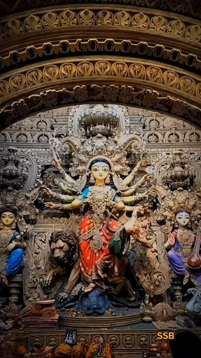
Mechogram Sarbojanin
৩৫তম বর্ষ
সাজসজ্জা ও সাংস্কৃতিক অনুষ্ঠানের জন্য এই পূজা পরিচিত।
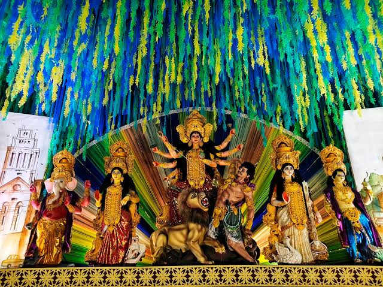
Nandakumar NSCC Club
৫০তম বর্ষ
ঐতিহ্যবাহী পরিবেশে ভক্তি ও উৎসাহের সঙ্গে পূজা হয়।
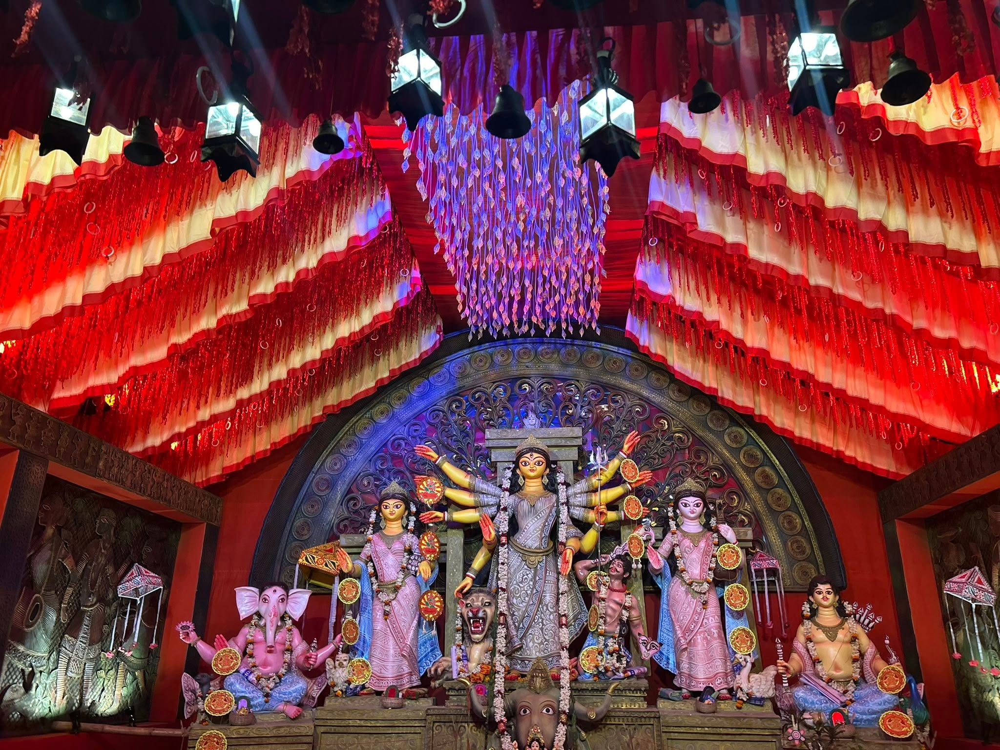
Haldia Juger Jatri Club
৩৯তম বর্ষ
স্থানীয় মানুষের মিলন ও উৎসবের অন্যতম বড় আকর্ষণ।
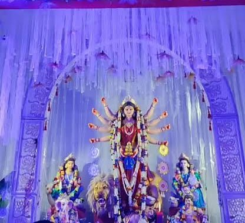
Tamluk Basan Balak Sangha
৪২ তম
নতুন প্রজন্ম ও ঐতিহ্যের সুন্দর সমন্বয়ে পূজা অনুষ্ঠিত হয়।
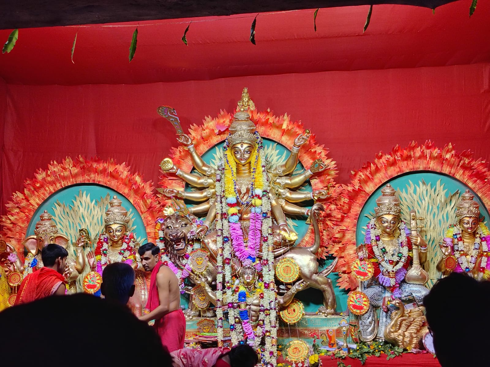
Mahishadal MYCO Club
৫৩ তম বর্ষ
শহরের পরিবেশে শারদীয়া উৎসব পায় এক বিশেষ রূপ।
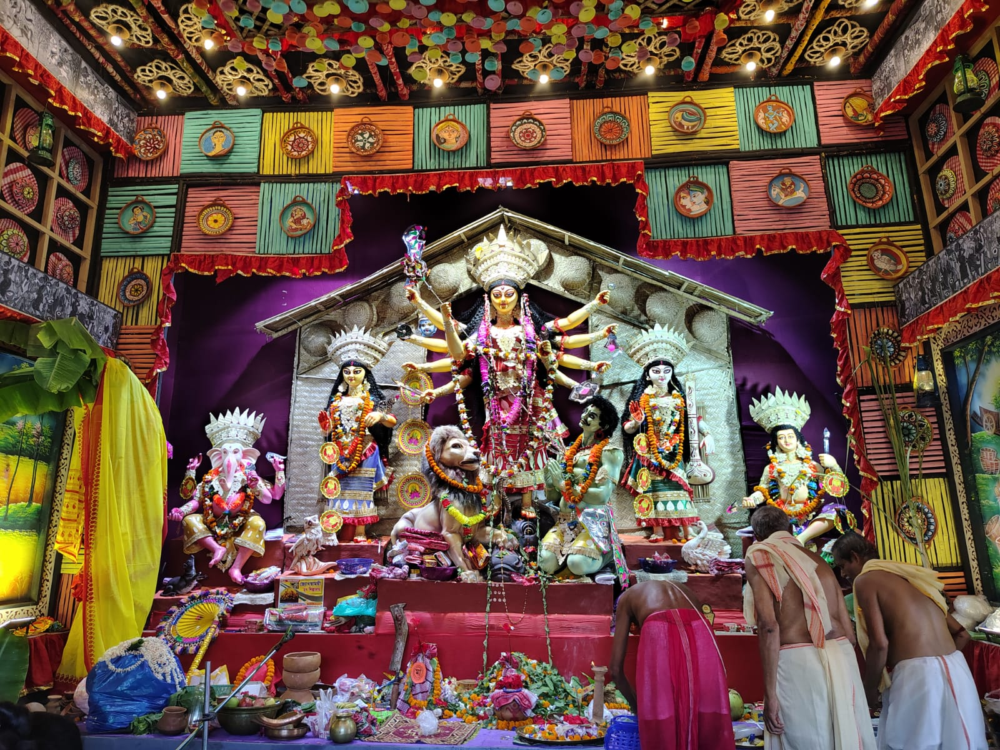
Mahisadal Sunday Club
৫৮ তম বর্ষ
প্রাচীন ঐতিহ্যকে সঙ্গে নিয়ে এখানে দুর্গাপূজা পালিত হয়।
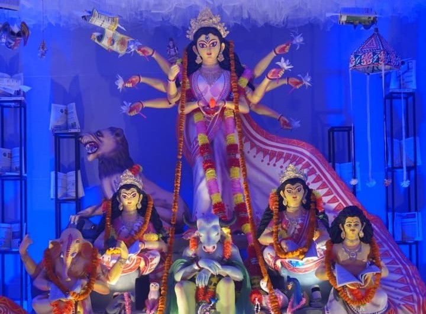
Basudevpur Khudiram Smriti Sangha
৩৭ তম বর্ষ
ভক্তি, সংস্কৃতি ও মানুষের মিলনে এই পূজা হয়ে ওঠে বিশেষ।
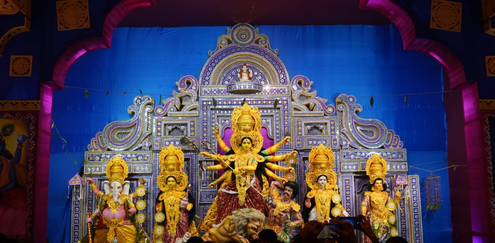
Kalikakhali Youth Forum Club
২৩ তম বর্ষ
আনন্দ ও উৎসাহের সঙ্গে প্রতিবছর শারদীয়া উৎসব পালিত হয়।
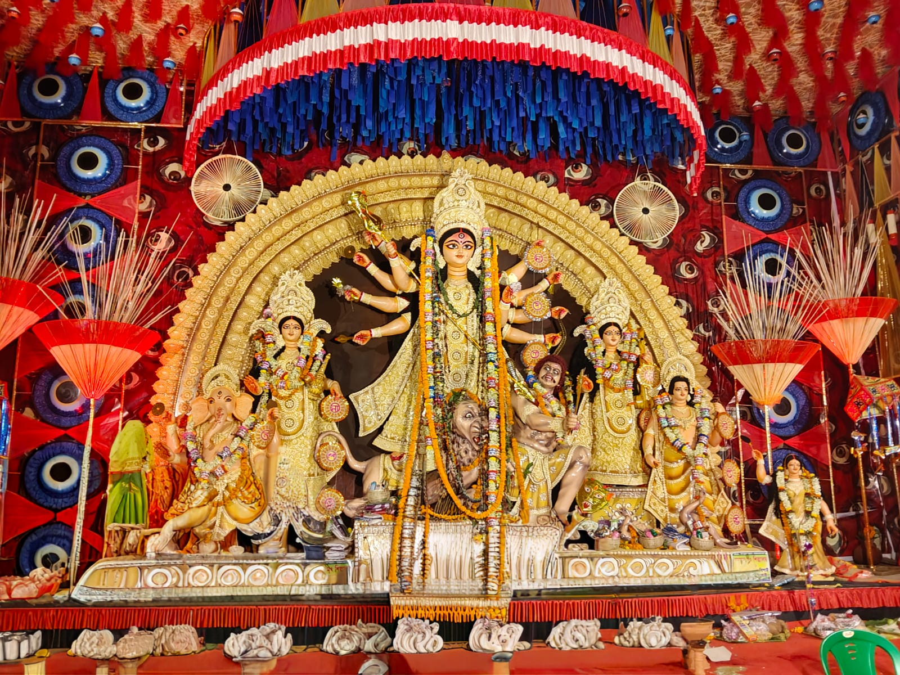
Chandipur Jhorer Kheya
২৩ তম বর্ষ
ভক্তি ও আনন্দের সঙ্গে প্রতিবছর এখানে দুর্গাপূজা পালিত হয়।
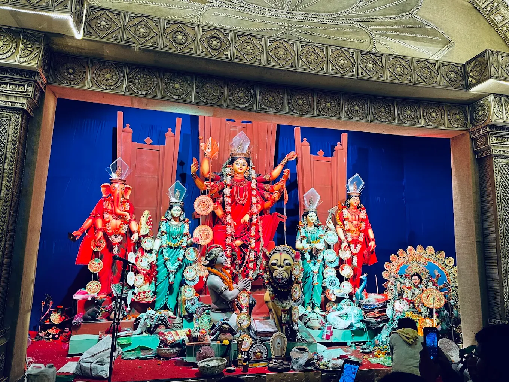
Club Pratyayi
১২ তম বর্ষ
স্থানীয় মানুষের মিলন ও উৎসবের সুন্দর পরিবেশ এখানে দেখা যায়।
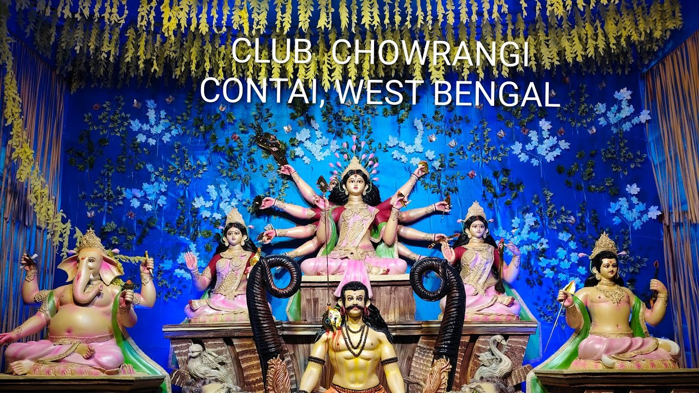
Chowrangee Recreation Club
২৮ তম বর্ষ
ঐতিহ্য মেনে সুন্দরভাবে শারদীয়া উৎসবের আয়োজন করা হয়।
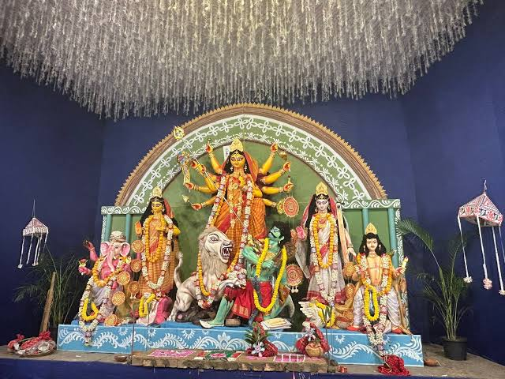
Haldia Durgotsav Committee
৪৬ তম বর্ষ
সাজসজ্জা ও সাংস্কৃতিক অনুষ্ঠানে পূজার পরিবেশ হয়ে ওঠে আনন্দময়।
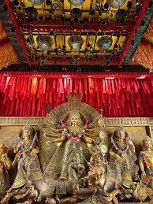
Durgachak Milan Sangha
৬২ তম বর্ষ
ভক্তি ও সংস্কৃতির সুন্দর মেলবন্ধনে এখানে পূজা অনুষ্ঠিত হয়।
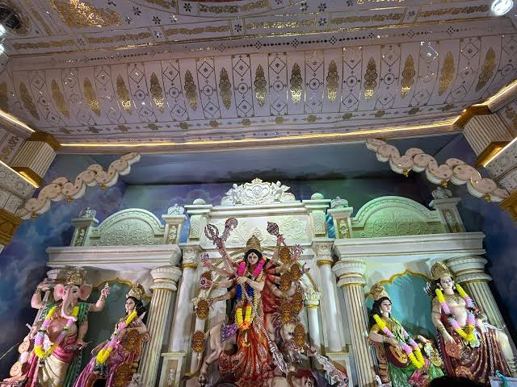
Chaitanyapur Nabatara Club
৩০ তম বর্ষ
প্রতিবছর নতুন আয়োজনের মাধ্যমে দুর্গোৎসব উদযাপন করা হয়।
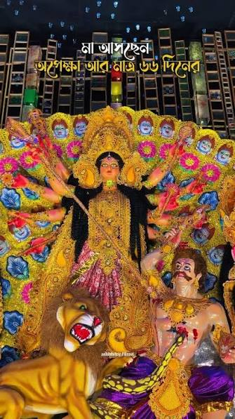
Haldia Ranichak Oriental Club
৫০ তম বর্ষ
এলাকার মানুষ একসঙ্গে মিলিত হয়ে আনন্দের সঙ্গে পূজা করেন।
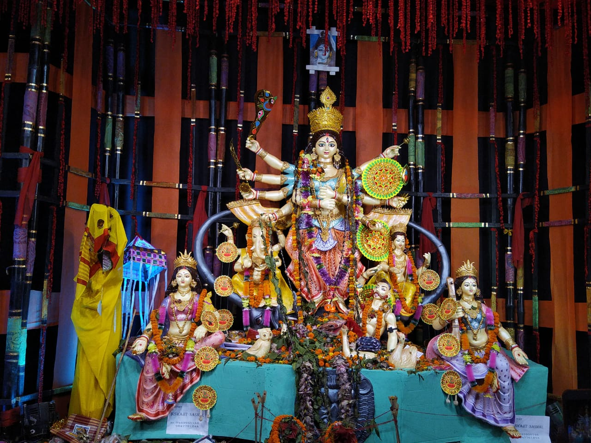
Khudiram Nagar Durga Idol
৫০ তম বর্ষ
ঐতিহ্যবাহী পূজা ও সুন্দর মণ্ডপের জন্য উৎসবের আমেজ তৈরি হয়।
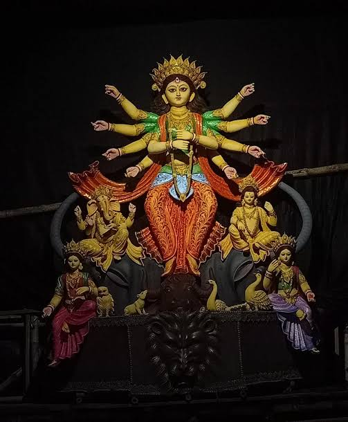
Haldia City Centre Mall
১১ তম বর্ষে
শারদীয়া উৎসবে ভক্তি, আনন্দ ও সংস্কৃতির মিলন ঘটে।